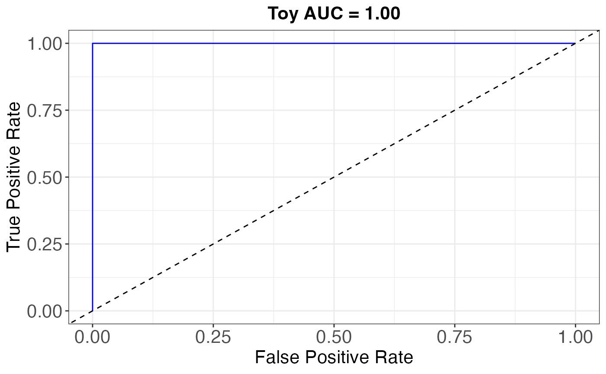

dioscRi quickstart
Elijah Willie
2026-05-21
Source:vignettes/dioscRi_quickstart.Rmd
dioscRi_quickstart.RmdOverview
This vignette runs the dioscRi modelling stage end-to-end on the toy
dataset bundled with the package (10 synthetic samples, 5 markers, 5
cell types). The full BioHEART-CT walkthrough, including the MMD-VAE
normalisation step, is in
vignette("dioscRi_introduction").
Bundled inputs
The bundled sample_* objects already contain the
pre-computed features that the dioscRi modelling stage consumes. The
MMD-VAE normalisation and feature-construction steps that produced them
are shown in the full vignette; here we skip straight to modelling.
data(sample_data_logit) # logit-transformed cell-type proportions
data(sample_markerMeans) # per-cell-type marker means
data(sample_groups) # overlapping group structure
data(sample_clinicaldata) # outcome + demographics
dim(sample_data_logit)
#> [1] 10 5
dim(sample_markerMeans)
#> [1] 10 25
length(sample_groups)
#> [1] 10
head(sample_clinicaldata)
#> sample_id Outcome Age Gender
#> 1 1 0 45 M
#> 2 2 1 52 M
#> 3 3 1 68 F
#> 4 4 0 41 F
#> 5 5 1 72 M
#> 6 6 1 65 FBuild the design matrix
Concatenate proportions and per-cell-type marker means, scale, and extract the binary outcome.
X <- cbind(sample_data_logit, sample_markerMeans)
X <- scale(X)
y <- as.numeric(sample_clinicaldata$Outcome) - 1Fit the overlapping group lasso
fitModel() searches
over a fixed 10,000-point
grid in
,
selecting the
that minimises BIC.
fit <- fitModel(
xTrain = X,
yTrain = y,
groups = sample_groups,
penalty = "grLasso",
seed = 1994
)
#> Computing optimal alpha using the BIC method
#> Testing alpha =0.1
#> New best BIC: 81.9320 at alpha = 0.100 lambda = 0.0515
#> Testing alpha =0.2
#> New best BIC: 68.3444 at alpha = 0.200 lambda = 0.0528
#> Testing alpha =0.3
#> New best BIC: 61.1253 at alpha = 0.300 lambda = 0.0501
#> Testing alpha =0.4
#> New best BIC: 53.4484 at alpha = 0.400 lambda = 0.0501
#> Testing alpha =0.5
#> New best BIC: 47.6280 at alpha = 0.500 lambda = 0.0502
#> Testing alpha =0.6
#> New best BIC: 41.2630 at alpha = 0.600 lambda = 0.0503
#> Testing alpha =0.7
#> New best BIC: 36.2445 at alpha = 0.700 lambda = 0.0506
#> Testing alpha =0.8
#> New best BIC: 31.2154 at alpha = 0.800 lambda = 0.0506
#> Testing alpha =0.9
#> New best BIC: 27.4406 at alpha = 0.900 lambda = 0.0501
#> Testing alpha =1
#> New best BIC: 26.0434 at alpha = 1.000 lambda = 0.0501
#> Optimal alpha value: 1
#> Optimal lambda value: 0.0500950095009501
#> Fitting the final model
#> Model fitting completeInspect the non-zero coefficients
coefs <- coef(fit$fit)
coefs[coefs != 0]
#> B_cells_logit CD4_T_logit B_cells_CD4 B_cells_CD19 B_cells_CD14
#> -0.18142056 -0.04125876 -0.14592035 -0.54166095 -0.88688672
#> CD4_T_CD4 CD4_T_CD19 CD4_T_CD14 CD8_T_CD4 CD8_T_CD19
#> -0.12826147 -0.37206210 -0.50394753 0.12966711 0.97526421
#> CD8_T_CD14 Monocytes_CD4 Monocytes_CD19 Monocytes_CD14 NK_cells_CD4
#> 0.40053591 0.10175852 0.21387468 0.14764319 0.17710408
#> NK_cells_CD19 NK_cells_CD14
#> -0.39792305 -0.22276815Predict and assess
plotAUC() returns the per-sample predictions and a ROC
plot. On a 10-sample toy dataset this is just to show the API; for real
held-out evaluation see the full vignette.
auc_res <- plotAUC(fit = fit$fit, xTest = X, yTest = y, title = "Toy AUC =")
auc_res$auc
#> [1] 1
head(auc_res$preds)
#> Truth Predicted PredictedClass
#> 1 0 0.1441551 0
#> 2 1 0.8547746 1
#> 3 1 0.8337004 1
#> 4 0 0.1272025 0
#> 5 1 0.8825813 1
#> 6 1 0.8873376 1
auc_res$plot
Where to go next
-
vignette("dioscRi_introduction")— full BioHEART-CT walkthrough including reference-sample selection (computeReferenceSample), MMD-VAE training (trainVAEModel), unsupervised clustering (trainCellTypeClassifier), and downstream interpretation (getSigFeatures,plotSigFeatures,visualiseModelTree). - The companion repository
ecool50/dioscRi_manuscriptcontains the four datasets, scripts, and the v1.0.0 release used in the paper.
Session info
sessionInfo()
#> R version 4.5.0 (2025-04-11)
#> Platform: aarch64-apple-darwin20
#> Running under: macOS 26.4.1
#>
#> Matrix products: default
#> BLAS: /Library/Frameworks/R.framework/Versions/4.5-arm64/Resources/lib/libRblas.0.dylib
#> LAPACK: /Library/Frameworks/R.framework/Versions/4.5-arm64/Resources/lib/libRlapack.dylib; LAPACK version 3.12.1
#>
#> locale:
#> [1] en_CA.UTF-8/en_CA.UTF-8/en_CA.UTF-8/C/en_CA.UTF-8/en_CA.UTF-8
#>
#> time zone: Australia/Sydney
#> tzcode source: internal
#>
#> attached base packages:
#> [1] stats graphics grDevices utils datasets methods base
#>
#> other attached packages:
#> [1] dioscRi_1.0.0 BiocStyle_2.36.0
#>
#> loaded via a namespace (and not attached):
#> [1] RColorBrewer_1.1-3 jsonlite_2.0.0
#> [3] magrittr_2.0.4 farver_2.1.2
#> [5] rmarkdown_2.30 fs_1.6.6
#> [7] ragg_1.4.0 vctrs_0.7.1
#> [9] ROCR_1.0-12 base64enc_0.1-6
#> [11] ggtree_4.0.4 janitor_2.2.1
#> [13] rstatix_0.7.3 htmltools_0.5.9
#> [15] S4Arrays_1.10.1 broom_1.0.12
#> [17] SparseArray_1.10.8 Formula_1.2-5
#> [19] gridGraphics_0.5-1 pROC_1.19.0.1
#> [21] caret_7.0-1 sass_0.4.10
#> [23] parallelly_1.46.1 bslib_0.10.0
#> [25] htmlwidgets_1.6.4 desc_1.4.3
#> [27] plyr_1.8.9 lubridate_1.9.4
#> [29] cachem_1.1.0 whisker_0.4.1
#> [31] lifecycle_1.0.5 iterators_1.0.14
#> [33] pkgconfig_2.0.3 Matrix_1.7-3
#> [35] R6_2.6.1 fastmap_1.2.0
#> [37] snakecase_0.11.1 MatrixGenerics_1.22.0
#> [39] future_1.69.0 digest_0.6.39
#> [41] aplot_0.2.9 ggnewscale_0.5.2
#> [43] patchwork_1.3.2 S4Vectors_0.48.0
#> [45] textshaping_1.0.1 GenomicRanges_1.62.1
#> [47] ggpubr_0.6.2 labeling_0.4.3
#> [49] tfruns_1.5.4 timechange_0.4.0
#> [51] abind_1.4-8 coop_0.6-3
#> [53] compiler_4.5.0 fontquiver_0.2.1
#> [55] withr_3.0.2 S7_0.2.1
#> [57] backports_1.5.0 carData_3.0-6
#> [59] psych_2.5.6 tensorflow_2.20.0
#> [61] ggsignif_0.6.4 keras3_1.2.0
#> [63] MASS_7.3-65 lava_1.8.2
#> [65] rappdirs_0.3.4 DelayedArray_0.34.1
#> [67] ggsci_4.2.0 ModelMetrics_1.2.2.2
#> [69] tools_4.5.0 otel_0.2.0
#> [71] ape_5.8-1 future.apply_1.20.1
#> [73] nnet_7.3-20 glue_1.8.0
#> [75] nlme_3.1-168 grid_4.5.0
#> [77] reshape2_1.4.5 generics_0.1.4
#> [79] recipes_1.3.1 gtable_0.3.6
#> [81] class_7.3-23 tidyr_1.3.2
#> [83] data.table_1.18.2.1 car_3.1-3
#> [85] XVector_0.50.0 BiocGenerics_0.56.0
#> [87] foreach_1.5.2 pillar_1.11.1
#> [89] stringr_1.6.0 yulab.utils_0.2.4
#> [91] splines_4.5.0 dplyr_1.1.4
#> [93] treeio_1.34.0 lattice_0.22-7
#> [95] survival_3.8-3 grpreg_3.5.0
#> [97] tidyselect_1.2.1 fontLiberation_0.1.0
#> [99] knitr_1.51 fontBitstreamVera_0.1.1
#> [101] bookdown_0.43 IRanges_2.44.0
#> [103] Seqinfo_1.0.0 SummarizedExperiment_1.40.0
#> [105] stats4_4.5.0 xfun_0.56
#> [107] Biobase_2.70.0 hardhat_1.4.2
#> [109] timeDate_4052.112 matrixStats_1.5.0
#> [111] stringi_1.8.7 lazyeval_0.2.2
#> [113] ggfun_0.2.0 yaml_2.3.12
#> [115] boot_1.3-31 evaluate_1.0.5
#> [117] codetools_0.2-20 gdtools_0.4.4
#> [119] tibble_3.3.1 BiocManager_1.30.26
#> [121] ggplotify_0.1.3 cli_3.6.5
#> [123] RcppParallel_5.1.11-1 rpart_4.1.24
#> [125] reticulate_1.44.1 systemfonts_1.3.1
#> [127] jquerylib_0.1.4 Rcpp_1.1.1
#> [129] zigg_0.0.2 globals_0.19.0
#> [131] zeallot_0.2.0 png_0.1-8
#> [133] parallel_4.5.0 Rfast_2.1.5.2
#> [135] pkgdown_2.1.3 gower_1.0.2
#> [137] ggplot2_4.0.1 listenv_0.10.0
#> [139] tidytree_0.4.7 ipred_0.9-15
#> [141] ggiraph_0.9.3 scales_1.4.0
#> [143] prodlim_2025.04.28 purrr_1.2.1
#> [145] rlang_1.1.7 mnormt_2.1.2